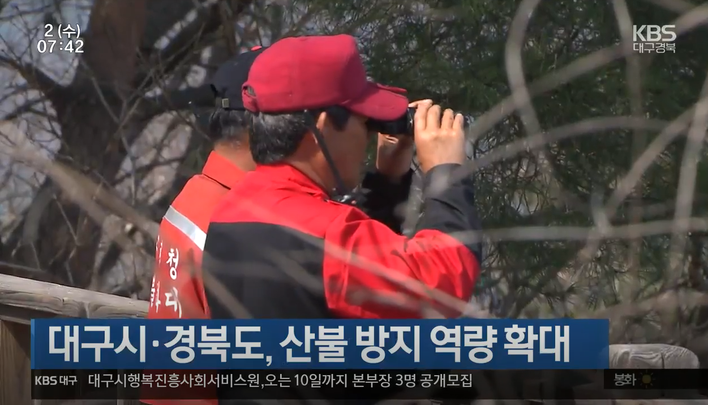
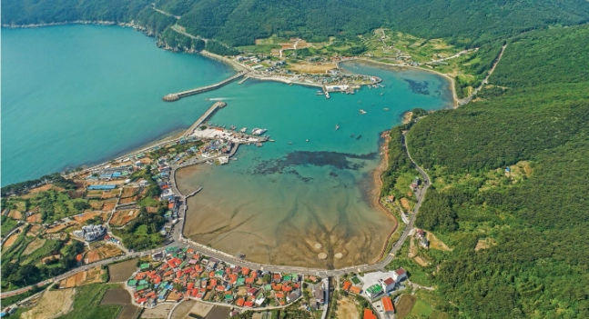

비닐봉투 금지, 1년 계도기간 준다…“시행 3주 앞두고 정책 후퇴” |
|
| 24일부터 시행되는 편의점 비닐봉투 금지 등 일회용품 규제를 앞두고 환경부가 1년 동안 계도 기간을 주기로 했다. 시행 초기 소비자의 혼란과 업주의 부담을 줄이기 위한 조치다. 하지만 시행을 불과 3주 앞두고 규제를 사실상 1년 유예한 조치에 대해 정부의 일회용품 정책이 후퇴했다는 지적이 나오고 있다. |
|  |
대구시·경북도, 산불 방지 역량 확대 |
| 경상북도는 연말까지 산불방지대책본부를 설치·운영합니다. 이에 따라 단풍 행락철 산불 취약지역을 중심으로 감시원 2천 5백여 명을 집중 배치하고, 시군별 기동단속반도 수시로 운영합니다. 또 유사시 초동진화를 위해 산불전문예방진화대 천 백여 명과 가용헬기 34대가 출동태세를 갖추도록 했습니다. 대구시도 산불조심기간인 내년 5월까지, 산불임차헬기 3대의 용량을 두 배로 늘리고 열화상카메라 드론을 현장에 투입하는 한편 산불감시원 등 3백여 명을 주요 등산로와 산불취약지에 배치합니다. |
|  |
거제 다대다포항 100억 투입해 '클린 국가어항'으로 |
| 경상남도는 해양수산부의 클린(Clean) 국가어항 시범사업 공모에 '거제 다대다포항'이 선정됐다고 1일 밝혔다. 이번 시범사업에 전국 115개 국가어항 중 5개 항만 선정됐다. 전북 격포항, 강원 남애항, 전남 녹동항, 충남 안흥항과 함께 거제 다대다포항이 뽑혔다. 이 사업은 어항에 방치된 어구와 기자재를 정리하고, 무질서하게 난립한 시설을 개선해 경관이 살아있는 쾌적한 공간으로 정비한다. 내년부터 2025년까지 항별로 100억 원 이상의 국비를 지원한다. |